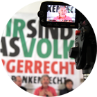
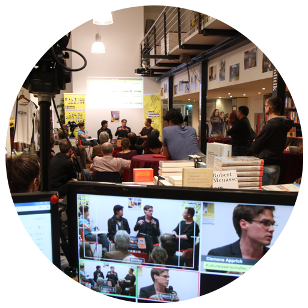
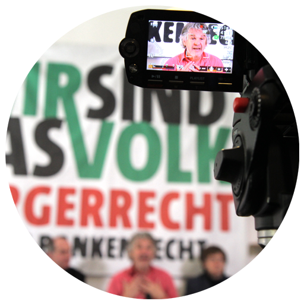

HD - Livestreaming
Erreichen Sie unbegrenzt viele Menschen und verstärken Sie die Wirkung durch Echtzeitkommunikation in den Sozialen Medien.
Wir bringen Ihre Veranstaltung live ins Internet, und das in bester Bild- und Ton-Qualität.
Nähere Details »

HD - Dokumentation
Wertvolle Inhalte nachhaltig dokumentieren ist unsere Kernkompetenz. Ob wissenschaftlicher Vortrag, kontroversielle Diskussionsveranstaltung oder populäres Unterhaltungsevent, eine professionelle Dokumentation sichert nachhaltig für zukünftige Projekte und Archive.
Nähere Details »
Schulung & Beratung
Unser Wissen im Bereich der medialen Inszenierung erfolgreich weiterzugeben ist Teil unserer Philosophie der medialen Selbstermächtigung aller BürgerInnen, nur so kann die Medienkompetenz in der breiten Bevölkerung wachsen und unsere Gesellschaft nachhaltig verbessern.
Nähere Details »

Inhouse oder mobil, für Web oder TV. HD - Livestreaming
Sie machen ein Event, wir kümmern uns um alle technischen Belange. Sei es die benötigte Video- & Audiotechnik, integrierte Projektionstechnik oder Internetanbindung, unsere jahrelange Erfahrung lässt einen reibungslosen Ablauf garantieren. Gerne ergänzen wir dabei vorhandene Infrastruktur oder bringen einfach alles mit.
Livestreams erhältlich ab 898 Euro.

Einmalig nachhaltig inszenieren. Event - Dokumentation in HD
Jede Veranstaltung ist einzigartig. Auch wichtig ist eine professionelle und umfassende Dokumentation in Bild und Ton. Es kann dabei der Fokus auf der inhaltlichen Voll-Dokumentation der Veranstaltung liegen oder aber auf einer atmosphärischen Zusammenfassung dieser. Wichtig ist, daß Sie zufrieden sind!
Event-Aufzeichnung ab 398 Euro.
Alles was wir können geben wir auch weiter. Beratung & Schulung
Sie möchten sich oder ihre Organisation nachhaltig “empowern” und die Videokompetenz haus-intern steigern? Wir vermitteln unser Wissen im Bereich Video, Inszenierung & Videoaktivismus. Von Intensiv-Schulungen für MitarbeiterInnen bis zu Medien-Workshops mit Jugendlichen und Kindern.
Kontaktieren Sie uns damit wir uns verstehen..